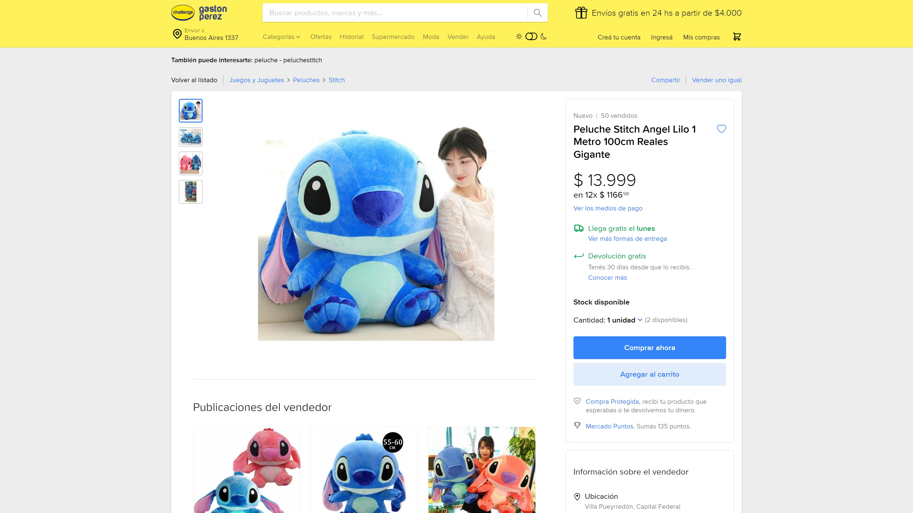

About Me
Me llamo Valentin y soy de Buenos Aires, Argentina. Soy Desarrollador Web Frontend en busca de mi primera experiencia laboral. Estoy estudiando Licenciatura y Tecnicatura en programacion informatica en la Universidad Nacional De Quilmes, y durante este período estoy aprendiendo tecnologias de diversos tipos.
Me considero una persona honesta, responsable y atenta a los detalles, con muchas ganas de seguir aprendiendo nuevas habilidades y tecnologías web para mi desarrollo profesional. También tengo un fuerte compromiso con los proyectos que me asignan, y doy lo mejor de mí para completar las tareas con el mejor resultado posible.
SERVICES
LENGUAJES DE PROGRAMACION
- JAVASCRIPT
- C#
- PHP
FRONTEND
- HTML
- CSS
- REACT
BACKEND
- NODEJS
- .NET5
- JENT
WORKS

Mapa con ubicaciones exactas de sitios los cuales la gente puntua sus experiencias

Clon de Mercado Libre, con carrito para compras, publicaciones guardadas, etc.

Aplicacion utilizada para compras navideñas donde se pueden encontrar juguetes